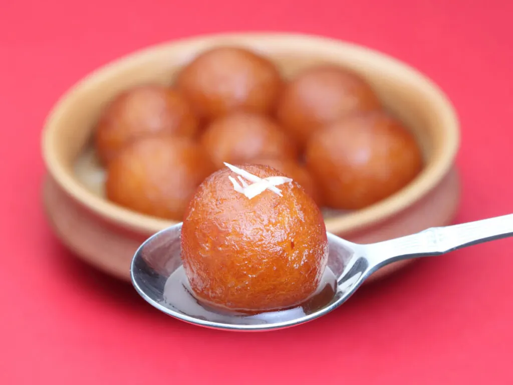

CHICKEN BIRIYANI

Ingredients:
- 2 cups Basmati rice
- 500g chicken, cut into pieces
- 1 onion, sliced
- 2 tomatoes, chopped
- 1/4 cup yogurt
- 1/4 cup fresh coriander leaves,chopped
- 1/4 cup fresh mint leaves, chopped
- 2 tablespoons vegetable oil
- 1 cinnamon stick
- 3-4 cloves
- 2-3 green cardamom pods
- 1 bay leaf
- 1/2 teaspoon turmeric powder
- 1 teaspoon red chili powder
- Salt to taste
- Water
Instructions:
- Wash and soak rice for 30 minutes.
- In a large pan, heat vegetable oil. Add cinnamon stick, cloves, cardamom pods, and bay leaf. Sauté for a minute until fragrant.
- Add sliced onions and sauté until they turn golden brown.
- Add chicken pieces and cook until they change color.
- Add chopped tomatoes, turmeric powder, red chili powder, and salt. Cook until tomatoes become soft.
- Stir in yogurt, fresh coriander leaves, and fresh mint leaves. Cook for a few more minutes.
- In a separate large pot, bring water to a boil. Add the soaked and drained rice. Cook until the rice is 70% cooked. Drain the rice.
- Layer the partially cooked rice over the chicken mixture in the pan. Cover and cook on low heat for about 20 minutes or until the rice is fully cooked and aromatic.
- Serve hot, garnished with additional fresh mint and coriander leaves.
Butter Chicken

Ingredients:
- 400g chicken breast, diced
- 1 cup tomato puree
- 1/2 cup heavy cream
- 2 tablespoons butter
- 1 onion, finely chopped
- 3 cloves garlic, minced
- 1-inch piece of ginger, grated
- 1 teaspoon garam masala
- 1/2 teaspoon chili powder
- 1/2 teaspoon turmeric powder
- Salt to taste
- Fresh coriander leaves for garnish
- Cooked rice or naan for serving
Instructions:
- Marinate chicken with yogurt, garam masala, chili powder, turmeric powder, and a pinch of salt.
- Refrigerate for at least 1 hour.
- In a pan, melt butter over medium heat. Add chopped onions and sauté until they turn translucent.
- Add minced garlic and grated ginger. Sauté for a few more minutes.
- Add marinated chicken and cook until it's no longer pink.
- Pour in tomato puree and simmer for 10-15 minutes until the sauce thickens and the chicken is cooked through.
- Stir in heavy cream and simmer for an additional 5 minutes.
- Season with salt to taste.
- Garnish with fresh coriander leaves.
- Serve hot with cooked rice or naan.
Gulab Jamun
Ingredients:
- 1 cup milk powder
- 1/4 cup all-purpose flour
- 1/4 cup ghee (clarified butter)
- 1/4 cup milk
- A pinch of baking soda
- Oil or ghee for frying
- 1 cup sugar
- 1 cup water
- A few saffron strands (optional)
- 1/2 teaspoon cardamom powder
For the sugar syrup:
Instructions:
- In a mixing bowl, combine milk powder, all-purpose flour, ghee, and a pinch of baking soda.
- Gradually add milk and knead the mixture into a soft dough.
- Divide the dough into small, smooth balls (around 12-15).
- Heat oil or ghee in a deep frying pan over low-medium heat.
- Fry the dough balls on low heat until they turn golden brown. Remove and set aside.
- In a separate pan, prepare the sugar syrup by boiling sugar, water, saffron strands (if using), and cardamom powder. Simmer until it reaches a syrupy consistency.
- Add the fried dough balls (gulab jamuns) to the hot sugar syrup and let them soak for at least 1 hour.
- Serve warm or at room temperature. Enjoy your Gulab Jamun!